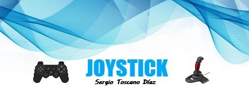
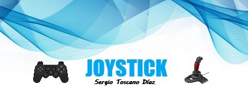
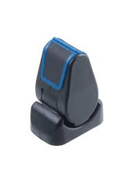

Tipos
Los tipos de joysticks que se encuentran en el mercado son, principalmente, para el control de videojuegos. Es raro encontrar un joystick para otro ámbito distinto. Estos son los principales:
Este dispositivo es más común y se utiliza casi siempre en PC. Tiene una similitud con las palancas de mando que se utilizaban en el atari 2600.
Consiste en una perilla que se usa para controlar el juego. Es el más antiguo de todos los que existen, fue creado con la primera consola de juegos.
Además de manejar el juego con la palanca digital, puede implementar potenciómetros para poder medir movimientos.
Posee varios botones que se conectar a través de un puerto USB. Los más utilizados son los de videoconsolas, pero hay algunos especiales para PC y otras consolas.